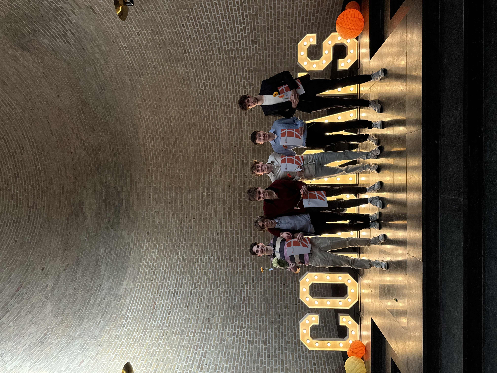
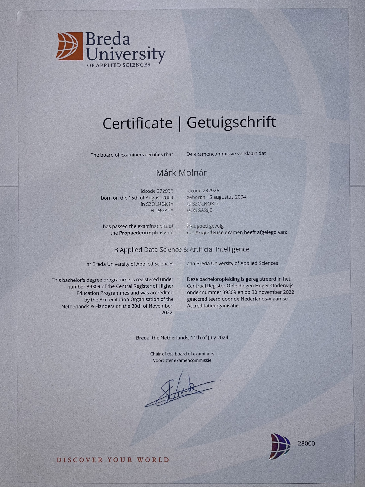
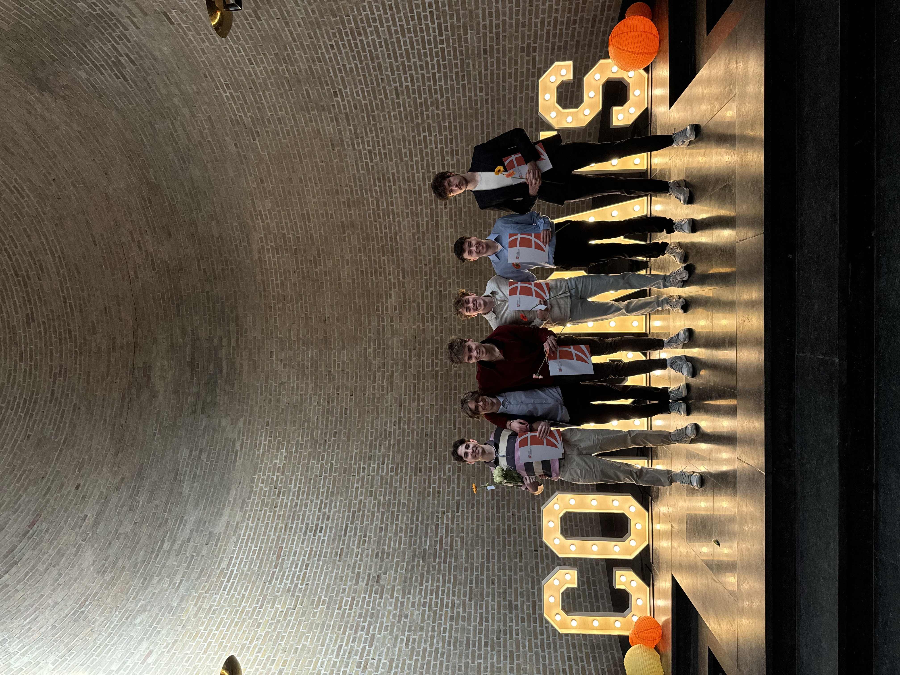
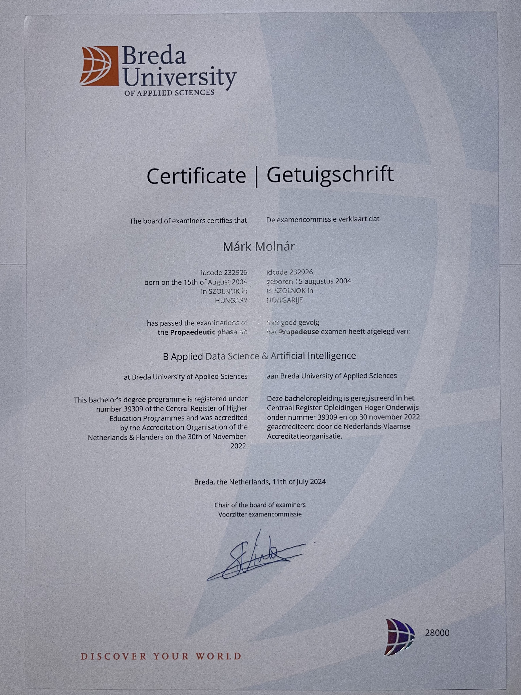

About Me
I was born and raised in Hungary. I spent my childhood in a small village where I attended elementary school. Later, I pursued my high school education at Varga Katalin High School in Szolnok, specializing in IT and Mathematics. It was during this time that I was introduced to programming, robotics, and linear algebra.
In 2023, I moved to the Netherlands to pursue my studies at Breda University of Applied Sciences. This was a significant step in my personal and professional growth, and living abroad has enriched my experiences, both academically and socially.
Currently, I’m working towards a BSc in Applied Data Science & Artificial Intelligence at Breda University of Applied Sciences. Programming excites me because it’s a world where everything is clear and logical. When solving complex problems, I find satisfaction in seeing the results of my efforts. For me, IT and AI are the future, and I’m eager to be part of solving the mysteries and challenges of this ever-evolving field.
Known for my persistence and belief in self-improvement, I am driven by the idea that anything is possible through hard work and dedication.